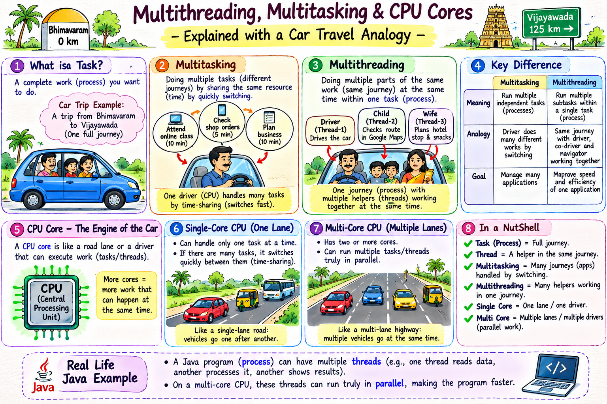
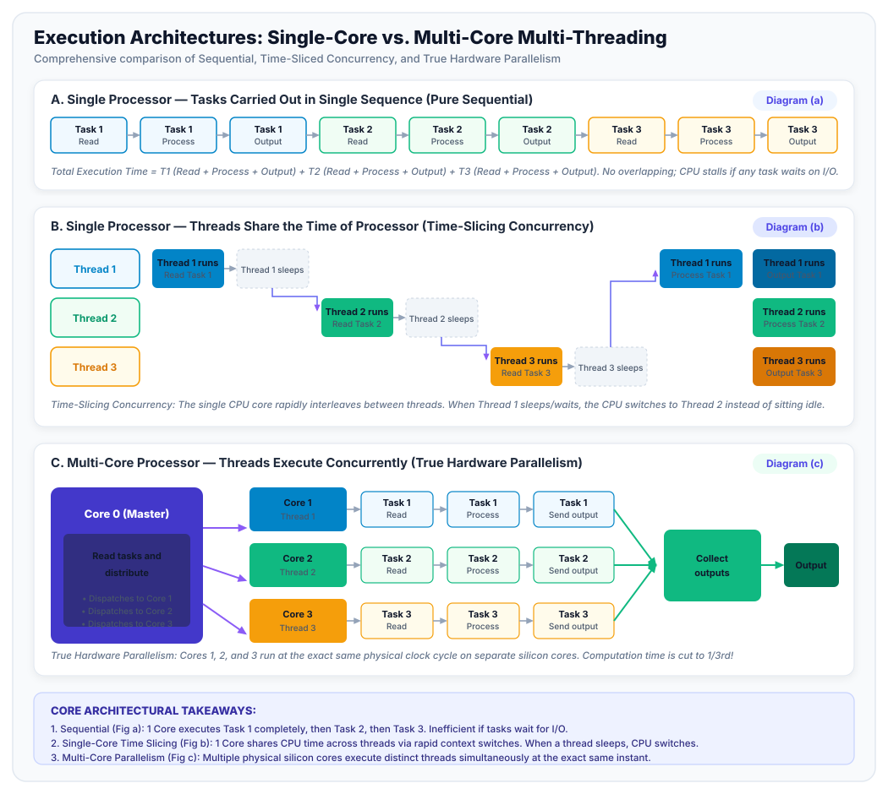
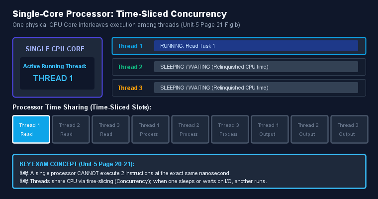
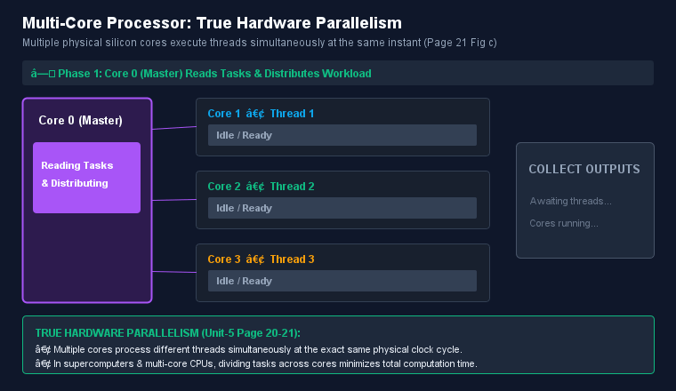

Master the foundational pillars of high-performance Java: what threads are, why modern computing hardware demands multi-threading, the physical clock frequency limit (~15 GHz), how single-core time-slicing differs from true multi-core hardware parallelism, and how multi-threading scales throughput and responsiveness across computing systems.
In modern operating systems and runtime environments:

Visual Analogy: In a single-threaded workflow, a single worker must execute every sequential step alone—if one task stalls on I/O, the entire flow freezes. With multi-threading, independent workers (threads) execute distinct paths concurrently, dramatically elevating throughput and responsiveness.
Why didn't CPU designers simply make a single CPU core run at 20 GHz, 50 GHz, or 100 GHz?
Therefore, increasing computer throughput by just boosting raw clock frequency hit a physical dead-end.
To thoroughly understand how processors schedule and execute threads, explore the animated visual representations of the three primary execution models below:

Figure 1: Direct visual comparison of: (a) Single sequence sequential execution, (b) Single processor time-sliced multi-threading, and (c) Multi-core concurrent multi-threading with task distribution and output aggregation.

How it works: The single CPU core cannot run two instructions at the exact same nanosecond. Instead, it rapidly switches between Thread 1, 2, and 3. When a thread finishes its time-slice or goes to sleep, the CPU immediately executes the next thread.

How it works: Master Core 0 reads incoming tasks and distributes them across Core 1, Core 2, and Core 3. All 3 worker cores execute concurrently at the exact same physical clock cycle, cutting computation time to 1/3rd!
Select an execution model below to see how instructions move through the processor(s). Click Play or Next Step to observe scheduling and parallelism in real time:
To understand why threads are called "light-weight processes within a process", consider how modern Operating Systems handle multi-tasking compared to Java multi-threading:
| Criteria | Process-Based Multi-Tasking | Thread-Based Multi-Threading |
|---|---|---|
| Definition | Executing multiple distinct programs (processes) simultaneously managed by OS. | Executing multiple concurrent threads within the SAME program (process). |
| Real-World Example | Running Google Chrome, Spotify, and Eclipse IDE at the same time on your PC. | In Eclipse: One thread compiles code, another highlights syntax, a third auto-saves files. |
| Memory Isolation | Each process has its own separate, isolated memory address space. Process A cannot read Process B's memory. | All threads of a Java process share the same Heap memory and Method Area. |
| Context Switching Cost | Heavy & Expensive: CPU must flush cache, change page tables, and switch virtual memory address spaces. | Lightweight & Fast: Threads share memory; CPU only needs to swap thread registers and call stack pointer! |
| Communication | Complex and slow (Inter-Process Communication / IPC using sockets, pipes, files). | Fast and direct (Threads read and write to the same shared Java object references). |
| Crash Impact | If Spotify crashes, your Chrome browser and Java IDE continue running untouched. | If one thread causes an unhandled memory corruption or fatal error, it can crash the JVM! |
The following self-contained program demonstrates these core concepts: querying hardware CPU cores, inspecting the main thread, and comparing Sequential Execution against Concurrent Multi-Threaded Execution:
/**
* Multithreaded Programming: Introduction & CPU Cores Demonstration
* Covers:
* 1. CPU Cores detection via Runtime.getRuntime().availableProcessors()
* 2. JVM Main Thread inspection
* 3. The Two Creation Mechanisms (Extending Thread & Implementing Runnable)
* 4. Thread Initialization & State Transition via start()
* 5. Benchmark comparing Sequential Execution vs Concurrent Execution
*/
public class MultiThreadingIntroAndCoresDemo {
// Mechanism 1: Extending the Thread class
static class TaskWorkerThread extends Thread {
private final String taskName;
public TaskWorkerThread(String taskName) {
super(taskName); // Assign thread name
this.taskName = taskName;
}
@Override
public void run() {
System.out.println(" [" + getName() + "] Stage 1: READ data started...");
simulateWork(100);
System.out.println(" [" + getName() + "] Stage 2: PROCESS calculations...");
simulateWork(100);
System.out.println(" [" + getName() + "] Stage 3: SEND output completed!");
simulateWork(100);
}
}
// Mechanism 2: Implementing the Runnable interface
static class TaskRunnable implements Runnable {
private final String taskName;
public TaskRunnable(String taskName) {
this.taskName = taskName;
}
@Override
public void run() {
String tName = Thread.currentThread().getName();
System.out.println(" [" + tName + "] (Runnable) Processing " + taskName);
simulateWork(150);
}
}
public static void main(String[] args) {
System.out.println("==================================================================");
System.out.println(" MULTITHREADED PROGRAMMING - CORES & CONCURRENCY DEMO ");
System.out.println("==================================================================");
// 1. HARDWARE CPU CORES DETECTION
int cores = Runtime.getRuntime().availableProcessors();
long freeMem = Runtime.getRuntime().freeMemory() / (1024 * 1024);
long totalMem = Runtime.getRuntime().totalMemory() / (1024 * 1024);
System.out.println("\n[SECTION 1: SYSTEM SILICON HARDWARE DETECTED]");
System.out.println(" Available CPU Cores / Logical Processors : " + cores);
System.out.println(" JVM Initial Heap Memory : " + totalMem + " MB");
System.out.println(" JVM Free Heap Memory : " + freeMem + " MB");
// 2. MAIN THREAD INSPECTION
System.out.println("\n[SECTION 2: AUTOMATIC MAIN THREAD]");
Thread mainThread = Thread.currentThread();
System.out.println(" Thread Name : " + mainThread.getName());
System.out.println(" Thread ID : " + mainThread.getId());
System.out.println(" Thread Priority : " + mainThread.getPriority() + " (NORM_PRIORITY = 5, Range 1 to 10)");
System.out.println(" Thread State : " + mainThread.getState());
// 3. THREAD INITIALIZATION & START
System.out.println("\n[SECTION 3: THREAD INITIALIZATION & START]");
TaskWorkerThread t1 = new TaskWorkerThread("Worker-Thread-1");
System.out.println(" Created t1: " + t1.getName() + " -> State: " + t1.getState());
System.out.println(" Key Concept: Thread state is NEW. The CPU does not execute it yet.");
System.out.println(" Invoking t1.start() registers it with the OS dispatcher and transitions state to RUNNABLE.");
// 4. BENCHMARK: SEQUENTIAL VS. MULTI-THREADED
System.out.println("\n[SECTION 4: BENCHMARK - SEQUENTIAL VS. MULTI-THREADED]");
// --- PART A: Pure Sequential Execution ---
long seqStart = System.currentTimeMillis();
executeTaskSequentially("Task 1 (Payment Verification)");
executeTaskSequentially("Task 2 (Inventory Allocation)");
executeTaskSequentially("Task 3 (Order Notification)");
long seqDuration = System.currentTimeMillis() - seqStart;
System.out.println("Sequential Execution Time: " + seqDuration + " ms");
// --- PART B: Multi-Threaded Execution ---
long mtStart = System.currentTimeMillis();
TaskWorkerThread worker1 = new TaskWorkerThread("Worker-Core1");
TaskWorkerThread worker2 = new TaskWorkerThread("Worker-Core2");
TaskWorkerThread worker3 = new TaskWorkerThread("Worker-Core3");
worker1.start();
worker2.start();
worker3.start();
try {
worker1.join();
worker2.join();
worker3.join();
} catch (InterruptedException e) {
Thread.currentThread().interrupt();
}
long mtDuration = System.currentTimeMillis() - mtStart;
System.out.println("Multi-Threaded Execution Time: " + mtDuration + " ms");
double speedup = (double) seqDuration / Math.max(mtDuration, 1);
System.out.printf("\n>> Performance Gain: %.2fx faster with Multi-Threading!\n", speedup);
}
private static void executeTaskSequentially(String taskName) {
System.out.println(" [Sequential] " + taskName + " -> Read");
simulateWork(100);
System.out.println(" [Sequential] " + taskName + " -> Process");
simulateWork(100);
System.out.println(" [Sequential] " + taskName + " -> Output");
simulateWork(100);
}
private static void simulateWork(long millis) {
try {
Thread.sleep(millis);
} catch (InterruptedException e) {
Thread.currentThread().interrupt();
}
}
}These questions test essential conceptual and architectural understanding of multi-threading. Click any question to reveal the detailed answer: